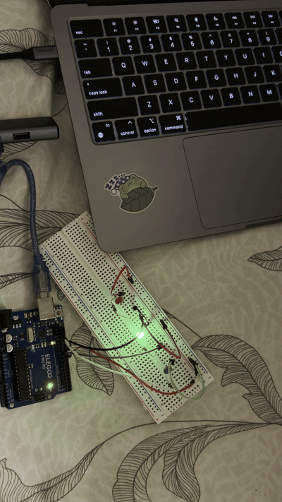
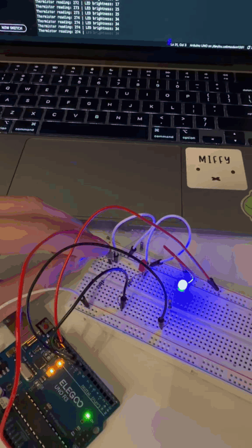
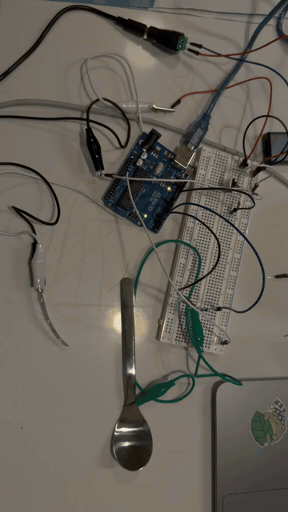

Assignment 1: Blink!

Assignment 1 was creating a circuit and programming a code that makes the LEDs blink!
Assignment 2: Fade!

Assignment 2 is creating a circuit and programming code so that a button can trigger on/off a LED animation. The LED animation is three lights blinking independently with the last LED fading in and out.
Assignment 3: Input Output!

I used a thermistor in a voltage divider to sense changes in temperature. The Arduino reads the voltage at A0 and uses that value to control two LEDs. A blue LED turns on for lower sensor readings, while a red LED turns on for higher readings.
Assignment 4: Libraries!

When I touch the metal spoon, the capacitive sensor detects the change and activates the servo motor, rotating it to 90° while turning on the green LED. When I release the spoon, the servo returns to 0° and the LED turns off.
Assignment 5: High(er) voltage and transistors!

When I touch the metal spoon, the capacitive sensor detects the change and the Arduino uses an N-MOSFET to turn on a 12 V LED strip powered by an external power supply. When I release the spoon, the LED strip turns off.